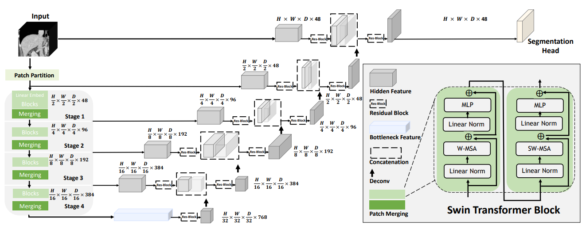
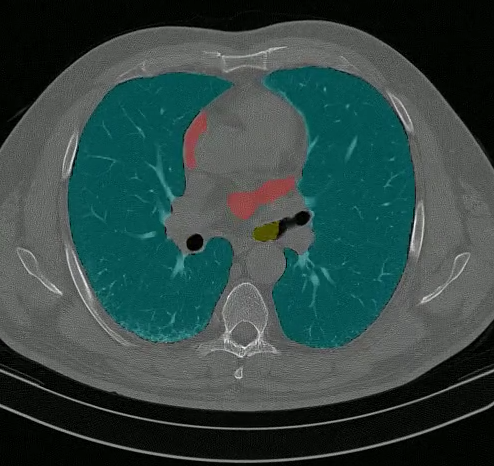
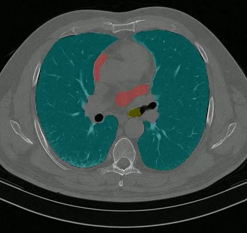

汇报大纲
01 研究背景
临床需求与技术现状
02 研究意义
医学影像分析应用价值
03 研究方法
模型架构与实验设计
04 实验结果
定量与定性分析
05 结论与展望
研究背景
Research Background
胸部CT影像的临床需求
肺部疾病筛查
心脏功能评估
气道病变分析
手术规划辅助
胸部CT是上述临床任务的核心影像学手段，全球每年进行数千万次检查。然而，人工标注耗时费力、主观性强、效率低下，难以满足大规模筛查需求。
深度学习技术演进
U-Net 2015
编解码结构 + 跳跃连接
医学图像分割基石
Ronneberger et al., MICCAI
Swin Transformer 2021
移位窗口自注意力
线性复杂度全局建模
Liu et al., ICCV
UNet++ 2018
嵌套跳跃路径
渐进式语义融合
Zhou et al., DLMIA
本研究系统对比三种代表性架构在胸部CT多器官分割任务上的性能差异
研究意义
Research Significance
临床与学术价值
临床应用
肺癌筛查 — 自动检测肺部结节
心脏评估 — 精确测量功能参数
气道分析 — 检测气管异常形态
学术贡献
方法学对比 — Transformer vs CNN
可复现性验证 — 三次独立实验
基准建立 — 公开数据集参照
研究方法
Methodology
数据集
| Kaggle Chest CT Segmentation | |
|---|---|
| 图像数量 | 1,000 对 |
| 分辨率 | 512 × 512 |
| 训练/验证 | 800 / 200 |
| 分割类别 | 肺、心脏、气管 |
肺
Lung
心脏
Heart
气管
Trachea
类别不平衡挑战：肺占比最大，气管最小，需针对性设计损失函数
模型架构 — U-Net（参考基线）
Baseline
图：U-Net架构 — 对称编解码结构 + 跳跃连接 (Ronneberger et al., MICCAI 2015)
编码器采用EfficientNet-B2（ImageNet预训练），解码器通过直接跳跃连接拼接特征
模型架构 — Swin-UNETR v2
Proposed
图：Swin-UNETR v2 — Swin Transformer编码器 + CNN解码器 (Hatamizadeh et al., MICCAI 2022)
编码器：4个Stage，移位窗口自注意力，特征维度 48→384
解码器：转置卷积上采样 + 跳跃连接特征融合
模型架构 — UNet++
Comparison
图：UNet++ — 嵌套跳跃路径 + 深度监督 (Zhou et al., DLMIA 2018)
EfficientNet-B2
ImageNet预训练编码器
嵌套跳跃路径
渐进式语义融合
深度监督
多层级联合优化
实验设计
| 配置 | 参考基线 (U-Net) | Swin-UNETR v2 | UNet++ |
|---|---|---|---|
| 编码器 | EfficientNet-B2 | Swin Transformer | EfficientNet-B2 |
| 预训练 | ImageNet | 无（从头训练） | ImageNet |
| 损失函数 | BCEDiceLoss | DiceFocalLoss | DiceFocalLoss |
| 优化器 | Adam | AdamW | AdamW |
| 批大小 | 8 | 16 | 64 |
| 训练轮数 | 100+ | 200 | 150 |
| 数据增强 | 轻量 | 重度（旋转/噪声/对比度） | 轻量（翻转/仿射） |
Loshchilov & Hutter, 2017 · Milletari et al., 2016 · Lin et al., ICCV 2017
损失函数：DiceFocalLoss
Dice Loss
直接优化分割重叠度
对类别不平衡天然鲁棒
$\mathcal{L}_{\text{Dice}} = 1 - \frac{2\sum p_i g_i + \epsilon}{\sum p_i + \sum g_i + \epsilon}$
Focal Loss
聚焦难分类样本
调制因子 $(1-p_t)^\gamma$
$\mathcal{L}_{\text{Focal}} = -\alpha_t(1-p_t)^\gamma \log(p_t)$
$\mathcal{L} = \lambda_{\text{Dice}} \cdot \mathcal{L}_{\text{Dice}} + \lambda_{\text{Focal}} \cdot \mathcal{L}_{\text{Focal}}$ ($\lambda_{\text{Dice}} = \lambda_{\text{Focal}} = 1.0$, $\gamma = 2.0$)
实验结果
Experimental Results
定量评估结果
| 模型 | 肺 DSC | 心脏 DSC | 气管 DSC | mDSC |
|---|---|---|---|---|
| 参考基线 (U-Net) | — | — | — | ≈0.968* |
| Swin-UNETR v2（基准） | 0.963 | 0.913 | 0.940 | 0.939 |
| Swin-UNETR v2（优化） | 0.966 | 0.905 | 0.946 | 0.939 |
| UNet++ | 0.970 | 0.972 | 0.956 | 0.966 |
*参考基线采用整体Dice（非逐器官），数据划分不同，不宜直接比较
关键发现
心脏DSC提升显著
UNet++: 0.972 vs Swin-UNETR: 0.905
+6.7pp
UNet++收敛更快
第60轮损失骤降，仅需150轮
Swin-UNETR v2需200轮
过拟合风险
Swin-UNETR v2第200轮心脏DSC
从0.913降至0.843
可复现性验证
两次Swin-UNETR v2实验
mDSC差异 < 0.2%
定性可视化结果
Ground Truth

UNet++ Prediction

结论与展望
Conclusion & Future Work
主要结论
局限性与未来工作
局限性
数据集规模有限（1,000例）
仅评估2D横断面，未涉及3D
未考虑临床诊断指标
未来方向
多中心数据 + 3D体素分割
多任务学习（分割+诊断）
可解释性 + 临床验证
Thank You
Questions & Discussion
俞烨 · 张天硕 · 张璟文 · 张鸿榜 · 吴君凯 · 黄绍华 · 陈飞翔 · 刘华胜
医学图像处理技术 · 第15组
References: Ronneberger et al. (MICCAI 2015) · Liu et al. (ICCV 2021) · Zhou et al. (DLMIA 2018) · Tan & Le (ICML 2019) · Hatamizadeh et al. (MICCAI 2022) · Lin et al. (ICCV 2017) · Milletari et al. (3DV 2016) · Loshchilov & Hutter (2017)